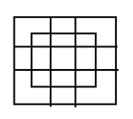

Q.1)
In question below shown, count the number of triangle and squares

- 26 triangles, 5 squares
- 28 triangles, 5 squares
- 26 triangles, 6 squares
- 28 triangles, 6 squares
Answer :Option A
The simplest triangle is shown in figure is 12 and another is IBO, BDO, DGO, GIO, ABO,CBD, DEO, IBD,BDG, DGI, GIB, ACO and COE and ACE is the total no of triangle are 12+14=26
Q.2)
How many triangles in the figure (?)

- 16
- 15
- 8
- 10
Answer :Option A

in the figure the 8 triangle is shown easily and another is COD , DOB, BOA, AOC, ACD, BDC,ABC, ABD so that total no. of triangle is 8+8=16
Q.3)
How many triangle is in the given figure (?)
- 16
- 15
- 8
- 10
Answer :Option D
Q.4)
How many triangles are in the figure (?)
- 16
- 15
- 8
- 10
Answer :Option D

The triangle 6 shown in figure and another is ADB,ACB, BDC,ADC, so that total number of triangle is 10
Q.5)
How many squares in the figure (?)

- 27
- 15
- 20
- 16
Answer :Option A
from the above figure counting the squares and we get the 27 squares